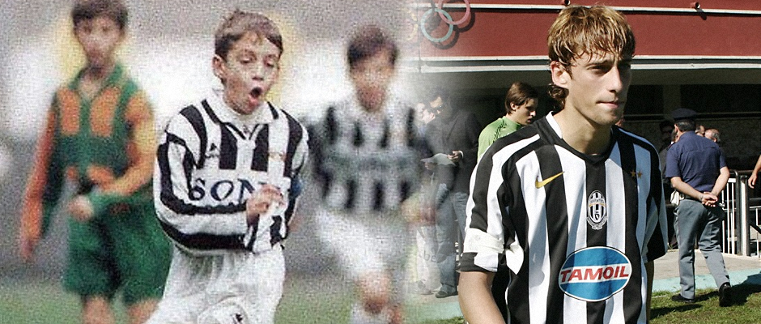
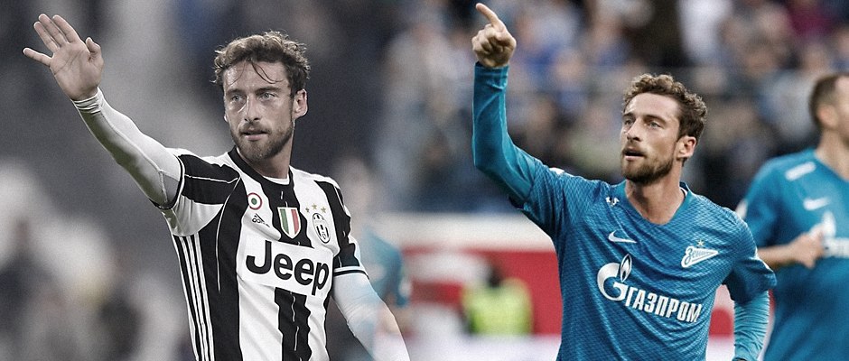
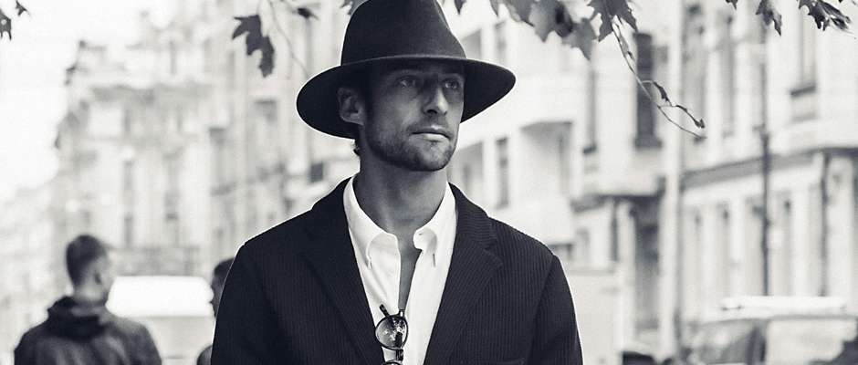

| 이름 | 클라우디오 마르키시오 Claudio Marchisio |
|---|---|
| 생년월일 | 1986년 1월 19일 |
| 국적 | 이탈리아 |
| 신체 | 180cm, 74kg |
| 포지션 | 미드필더 (MF) |
| 소속 | 유벤투스유스팀 (1993 - 2005) 유벤투스 (2006 - 2018) 제니트 상트페테르부르크 (2018 - 2019) 은퇴 (2019) |
| SNS |
|
유벤투스의 미래
가족들이 모두 유벤투스의 팬이고 마르키시오 또한 4살때부터 경기장에 다닌 유벤투스의 성골 팬이다. 7살 때 유벤투스 유스팀에 입단하여 축구를 시작하였다. 2006년 유벤투스 프로팀에 데뷔하였고 2007-2008시즌에는 경험을 키우고자 엠폴리로 임대를 다녀왔다. 임대 이후인 2008-2009시즌부터 유벤투스에서 점차 입지를 넓혀가며 당시 유소년팀에서부터 함께 성장해 온 파올로 데 첼리에, 세바스티안 지오빈코와 함께 유벤투스의 3대 미래라고 불리우게 된다.
판타지스타

2009-2010시즌부터 팀의 주전으로서 두각을 나타내더니 2010-2011시즌에는 암울했던 팀전설의 유로파리그 6무 탈락 의 거의 유일한 희망이었다. 2011-2012시즌에 전성기를 맞게 되는데 유벤투스의 판타지스타 계보플라티니 - 바죠 - 델 피에로 를 잇는 선수가 될 수 있을 법한 퍼포먼스를 보여준다. 비달, 피를로와 함께MVP 라인으로 불리운다. 세리에A 최고의 미드필더진으로 군림한 시즌이다. 클럽과 이탈리아 대표팀을 오가며 월드클래스급 퍼포먼스를 보여준 시즌이다. 2012시즌 이후 포그바가 가세하여 MVPP 라인으로 세리에A를 넘어 세계 최고의 미드필드라인이라는 말이 손색없는 활약을 보여주고 2014-2015시즌 피를로의 레지스타롤을 물려받으며 팀이 챔피언스리그 결승전에 진출하는데 일조한다.
십자인대 부상
고질적인 잔부상을 달고 선수생활을 했고 특히 무릎에 약점이 있었다. 2015-2016시즌 말미 팔레르모와의 경기에서 십자인대가 파열되는 치명적인 부상을 당한다. 유벤투스 미드필더진의 핵심이었고 이탈리아 대표팀에서 또한 유로2016을 준비하고 있었지만 이 부상으로 인해 출전이 무산된다.
부상 이후
2016-2017시즌 중반 부상에서 복귀하였지만 결국 여러번의 부상과 치명적이었던 십자인대 부상을 겪은 후 2017-2018시즌부터는 폼이 떨어진 모습을 보인다. 주전 경쟁에서 밀리는 모습을 보여주고 2018-2019시즌을 앞두고 유벤투스와 상호 계약을 해지하고 25년간 몸담았던 팀에서 떠나게 된다.나 포함 거의 모든 팬들은 구단을 욕했다. 이후 자유계약으로 러시아의 제니트 상트페테르부르크로 이적하여 한시즌간 활약하지만 결국 고질적인 부상을 이기지 못하고 2018시즌이 끝나고 팀과 상호 계약을 해지한다.
은퇴
중국으로의 이적설 등 무성한 링크가 있었지만 결국 새 팀 없이 2019시즌이 시작되고 2019년 10월 3일 마르키시오는 현역 은퇴를 선언한다. 비교적 젊은 나이지만 결국 고질적인 부상때문에 선수 커리어가 많이 짧아진 아쉬운 케이스이다. 은퇴 후에 잘생긴 외모를 가지고(?) SNS 활동도 더 활발히 하고 방송 프로그램에도 나오고 격렬한 그라운드를 벗어나 가족들과 편안하고 행복하게 잘 - 살고 있다.한차례 자택에 강도가 침입하여 총기위협을 당했던 일만 제외하면...